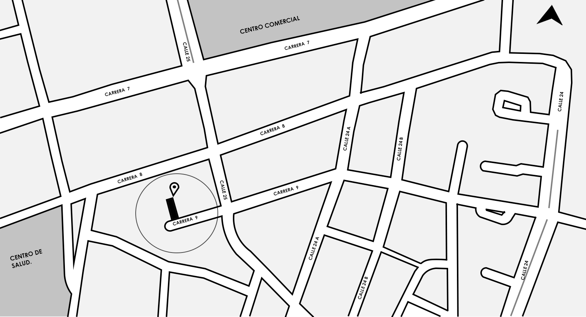
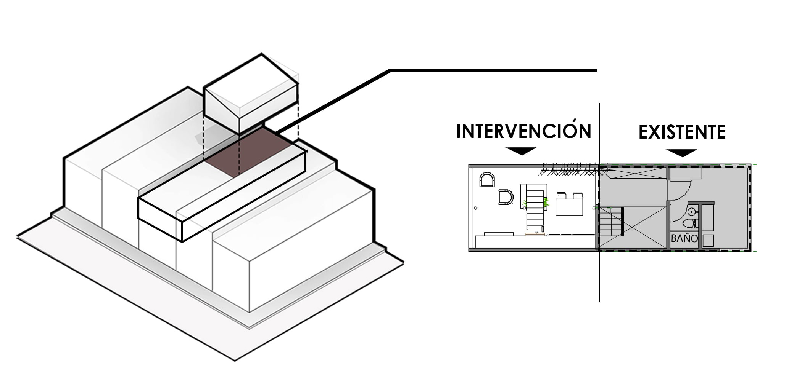

APARTA ESTUDIO C0.8

Aparta estudio C08 es una renovación de la mitad del último piso de una vivienda,
La propuesta busca un espacio fluido y flexible que permita albergar las actividades
cambiantes y buscar el máximo almacenamiento en una vivienda de escasos metros cuadrados.
ÁREA
AÑO
ARQUITECTO
CLIENTE
- UBICACIÓN 
El proyecto se ubica en una zona netamente urbana , cerca a la parte central del muncipio de Ipiales , lugar que se caracteriza porque tiene mixticidad de usos de gran valor , como lo son un centro comercial y un centro de salud.
- ZONIFICACIÓN 
El último piso de la vivienda se divide en dos sectores, en el sector existente se ubica el punto fijo, baño y lavandería. En el segundo sector que sería la renovación se ubica la sala, cocineta y dos habitaciones que se extienden en un monoespacio con mezanine.
- RENDERS


- PLANIMETRIA